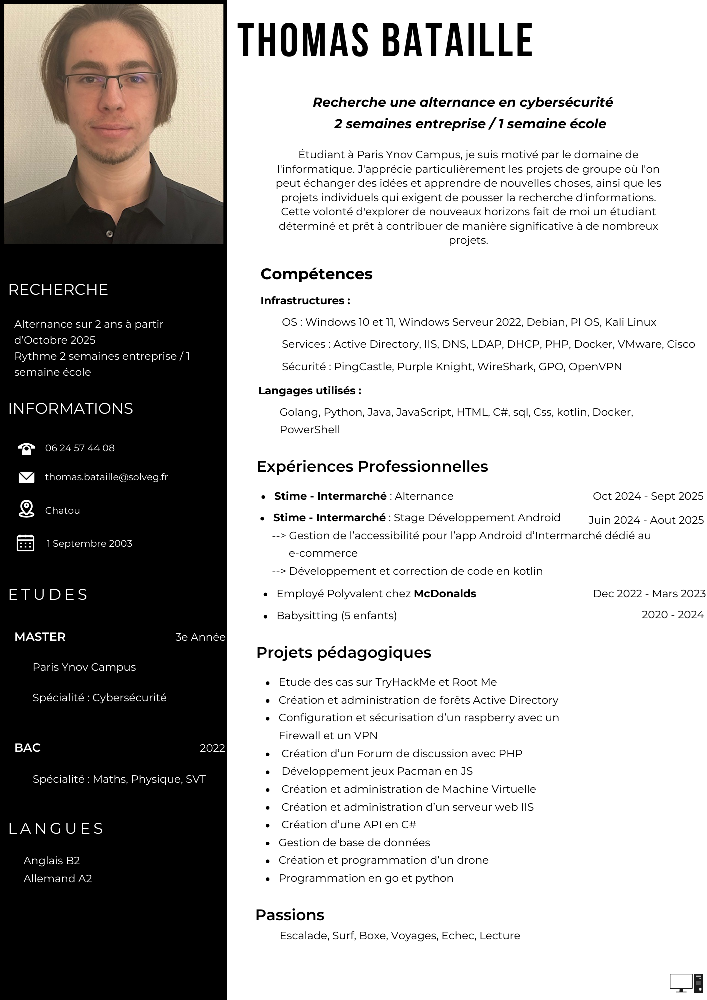

À propos de moi
Je m'appelle Thomas Bataille, étudiant en 3e année à Paris Ynov Campus dans le domaine de l'informatique, avec une spécialisation en Cybersécurité. Passionné par l'exploration des systèmes informatiques et la sécurité, je suis constamment en quête d'apprentissage à travers des projets variés.
Que ce soit en groupe, où j'apprécie les échanges d'idées, ou en solo, où je pousse mes recherches techniques, je suis déterminé à développer mes compétences et à contribuer de manière significative aux projets auxquels je participe.
Mon parcours académique et professionnel
Mon parcours m'a permis de développer des compétences solides en infrastructures réseau, développement d’applications, et sécurité informatique. Voici quelques projets que j'ai réalisés :
- Études de cas sur TryHackMe et Root Me
- Création et administration d'Active Directory et de machines virtuelles
- Sécurisation de systèmes avec un Raspberry Pi, pare-feu et VPN
- Développement d’un jeu Pacman en JavaScript et d’une API en C#
- Gestion de bases de données et programmation en Golang et Python
Expériences professionnelles
- Stime - Intermarché : Stage en développement Android (Juin 2024 - Août 2025)
- Stime - Intermarché : Alternance en développement (Octobre 2024 - Septembre 2025)
- McDonald's : Employé polyvalent (Décembre 2022 - Mars 2023)
- Babysitting (2020 - 2024)
Compétences techniques
- Systèmes : Windows 10/11, Windows Server 2022, Debian, Kali Linux, PI OS
- Services : Active Directory, IIS, DNS, DHCP, LDAP, Docker, VMware, Cisco
- Sécurité : PingCastle, Purple Knight, WireShark, GPO, OpenVPN
- Langages : Golang, Python, Java, JavaScript, HTML, C#, SQL, CSS, Kotlin, PowerShell
Centres d'intérêt
Escalade, Surf, Boxe, Voyages, Échecs, Lecture.
-

Voici mon CV
Vous pouvez consulter mon CV directement ci-dessous :
 Télécharger mon CV
La Stime
7 enseigne en France, Belgique, Portugal et Pologne.
E-Commerce
Un site E-commerce develloper pour le web, android et IOS par plusieurs equipes pour une meilleur repartition du projet.
Site Accessible
Le site est accessible à tous types de handicaps, qu'ils soient minimes ou plus connus. Par exemple, une personne aveugle disposera d'un lecteur d'écran pour naviguer sur l'ensemble du site, et une personne ayant de gros doigts bénéficiera d'un clic adapté sur chaque bouton.
Security
Plusieurs enseigne en france avec 2 datacenter située a Treville et a St Denis le site et securise par plusieurs equipe informatiques

{kind=link}
Bilan de Mon Stage de Fin d'Année
Impressions et Ressenti : Mon stage chez Stime - Intermarché a été une expérience extrêmement enrichissante. Dès mon arrivée, j'ai été accueilli chaleureusement et intégré sans difficulté dans une équipe dynamique. Cette intégration fluide m'a permis de me sentir à l'aise et prêt à contribuer efficacement dès le début.
Expérience Acquise
Au cours de mon stage, j'ai eu l'occasion de travailler sur plusieurs aspects techniques importants :
- Accessibilité : Amélioration de l'accessibilité de l'application Android d'Intermarché, en optimisant le support TalkBack et en ajustant les éléments interactifs pour les rendre plus accessibles.
- Développement avec Kotlin : Familiarisation avec Kotlin et Jetpack Compose, simplifiant la création d'interfaces utilisateur et rendant le développement plus rapide.
- Outils et Méthodes : Utilisation d'Android Studio, Git et GitLab pour gérer les tickets et les merge requests, facilitant la collaboration et la gestion des versions du code.
- Travail en Équipe : Collaboration avec mon maître de stage et participation à des tests unitaires et à la résolution de bugs en équipe.
Points d'Amélioration
Bien que mon stage ait été globalement positif, j'ai rencontré quelques défis liés à l'apprentissage de nouveaux outils et langages. Cependant, mes bases solides en développement m'ont permis de surmonter ces obstacles et d'améliorer mon intégration.
Conclusion
Ce stage a été une étape cruciale dans mon développement professionnel. J'ai acquis des compétences techniques précieuses et renforcé mes capacités à travailler en équipe. L'expérience m'a permis de comprendre l'importance de l'accessibilité et de m'adapter aux nouvelles technologies de développement.
-
Accessibilité et Développement avec Kotlin
Accessibilité : L'accessibilité est désormais une norme obligatoire pour garantir que les services numériques soient utilisables par tous, y compris les personnes en situation de handicap. Cela inclut des fonctionnalités telles que des lecteurs d'écran, des boutons adaptés, et des contrastes de couleurs optimisés. Kotlin et Jetpack Compose : Le développement avec Kotlin est devenu essentiel pour Android. Kotlin simplifie le code tout en améliorant la sécurité et la concision. Jetpack Compose facilite la création d'interfaces utilisateur, rendant le développement plus rapide et intuitif. L'intégration de ces technologies est cruciale pour offrir des expériences utilisateur de qualité tout en respectant les normes d'accessibilité.